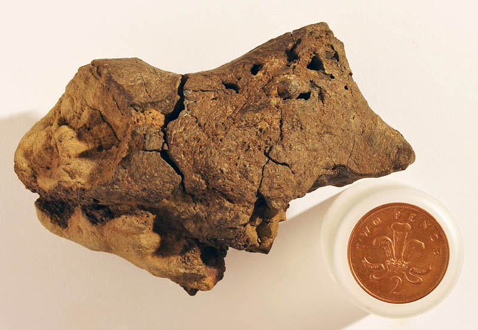

Prehistoric Period
Bexhill was not always a coastal town, 130 million years ago it was fresh-water flood plain composed of silt, clay and sandstone - perfect conditions for preserving imprints of prehistoric life.
Fossils
Resulting from storms and erosion from the sea, the cliffs around Galley Hill can often yield a surprising range of fossils. Dinosaur remains, crocodiles, sharks, lizards, turtles and various fish have been found.[2]
The best time to find fossils is during the spring low tides where dinosaur footprints become visible, including tracks from an Iguanodon - a three and half ton, ten meter long herbivore. Click the map-icon above to see where you can find these for yourself.

Jamie Hiscocks found the worlds first fossilised dinosaur brain in a rock pool the beach in 2004. It appears to show part of a brain cavity and tissue belonging to a relative of a Iguanodon.
Preserved in the swampy vegetated environment, the dinosaur's brain was essentially pickled. The specimen doesn't give a clear indicator of the original size, but does resemble those of modern birds and crocodiles.

The worlds smallest dinosaur; a foot-long, 7oz maniraptoran was uncovered by Dave Brockhurst at the site of Ashdown Brickworks on Turkey Road in 2011.
A vast selection of local dinosaur fossils can be found on display within Bexhill Museum.